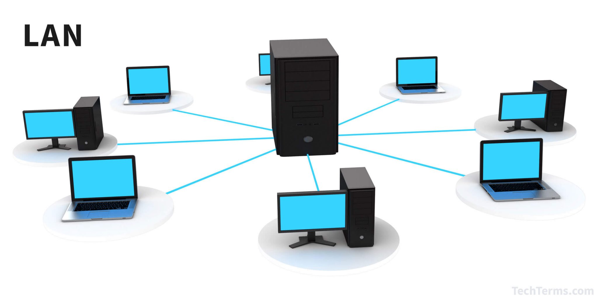
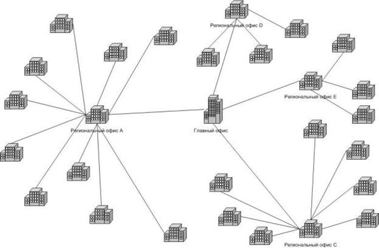

Типы сетей
Локальные сети (LAN)
Локальная сеть (LAN) - это сеть, которая ограничивается небольшой областью, такой как дом, офис или здание. Примеры устройств, используемых в LAN, включают компьютеры, принтеры и сетевые хранилища.
Городские сети (MAN)
Городская сеть (MAN) охватывает большую область, чем LAN, обычно город или группу близлежащих городов. MAN обычно используется для соединения нескольких LAN в одну большую сеть.
Глобальные сети (WAN)
Глобальная сеть (WAN) охватывает значительно большие расстояния, чем LAN или MAN, часто используется для соединения стран или континентов. WAN включает в себя технологии, такие как спутниковая связь и подводные кабели.